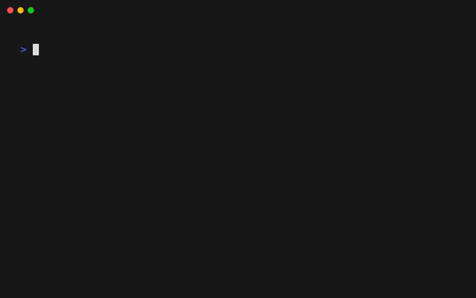
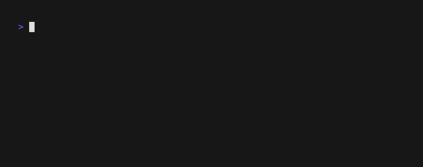

SnipKit Assistant
The SnipKit Assistant helps you create SnipKit snippets using AI.
Tip
Alternatively, you may try using SnipKit GPT to generate scripts compatible with SnipKit.

Supported AI Providers
- OpenAI (GPT-4, GPT-4o)
- Anthropic (Claude)
- Google Gemini
- Ollama (local models)
- OpenAI-Compatible (Together.ai, Groq, Azure OpenAI, etc.)
Generate Scripts
snipkit assistant generate
snipkit ai
SnipKit opens the generated script in the configured editor, allowing you to review and modify it if necessary. The script will be executed once you close the editor.
Retry or Tweak Prompts
If the script didn't work as expected or if you want to add more information, you can do so after the execution.

SnipKit remembers the previous prompt and script output. Everything is automatically included for the next prompt, so you don't need to provide anything unless you want to add new details.
Tip
If the script didn't work due to errors visible in the output, you may not need to provide a new prompt. Just leave it empty and press enter.
Save Generated Snippets
SnipKit supports saving generated snippets to your File System Library.

If you set saveMode: FS_LIBRARY, the assistant will ask whether you want to save the generated script after its execution.
version: 1.3.0
config:
assistant:
saveMode: FS_LIBRARY
Note
The File System Library manager must be enabled.
Configuration
This command lets you enable the assistant by editing your SnipKit configuration file:
snipkit assistant choose

You will need to provide an API key for the corresponding AI provider via an environment variable.
version: 1.3.0
config:
assistant:
# Defines if you want to save the snippets created by the assistant. Possible values: NEVER | FS_LIBRARY
saveMode: NEVER
providers:
- type: openai
enabled: true
model: gpt-4.1
apiKeyEnv: SNIPKIT_OPENAI_API_KEY
- type: anthropic
enabled: false
model: claude-sonnet-4.5
apiKeyEnv: SNIPKIT_ANTHROPIC_API_KEY
- type: gemini
enabled: false
model: gemini-1.5-flash
apiKeyEnv: SNIPKIT_GEMINI_API_KEY
- type: ollama
enabled: false
model: llama3
serverUrl: http://localhost:11434
Note
The first provider with enabled: true will be used. If all providers are set to enabled: false, the assistant will not function.